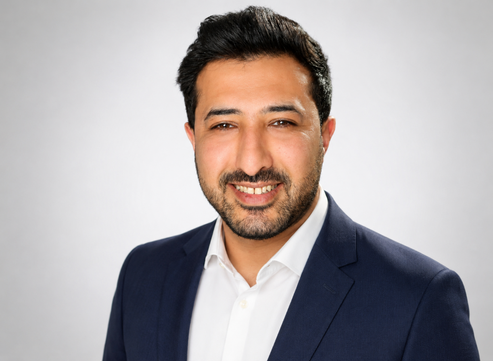

Netzwerktechnik
Grundlagen von Netzwerkstrukturen, Verbindungen und Fehleranalyse.

IT SYSTEMINTEGRATION • CISCO NETWORKING
Angehender Fachinformatiker für Systemintegration. Ich lerne Netzwerke, Cisco-Technologien, Windows Server und Active Directory praktisch in meinem IT-Lab.
Mein Network Lab ansehenPROFILE
Ich absolviere derzeit die Weiterbildung zum Fachinformatiker für Systemintegration bei TERTIA in Düsseldorf.
Ich bringe technisches Verständnis, eine sorgfältige Arbeitsweise und Erfahrung in der strukturierten Dokumentation mit. Mein Ziel ist es, diese Stärken in der IT-Systemintegration weiterzuentwickeln.
CURRENT FOCUS
HOME LAB
In meinem Lab verbinde ich Theorie mit Praxis: Ich plane Netzwerke, arbeite mit Cisco-Komponenten und dokumentiere meine Lernfortschritte.
omar@network-lab:~
$ whoami
Future IT System Integration Specialist
$ current_focus
Cisco Networking | Windows Server | Active Directory
$ lab_status
● Online and learningTECH STACK
Grundlagen von Netzwerkstrukturen, Verbindungen und Fehleranalyse.
Verwaltung von Benutzern, Gruppen und Berechtigungen.
Grundkenntnisse in Administration und Server-Diensten.
Strukturierte Problemlösung bei typischen Software- und Hardwareproblemen.
LEARNING BY DOING
Lernprojekt zur Planung eines kleinen Netzwerks mit IPv4, IPv6 und grundlegender Fehleranalyse.
NetzwerktechnikIPv4 / IPv6Lernprojekt zur Verwaltung von Benutzern, Gruppen und Berechtigungen in einer Windows-Domäne.
Active DirectoryWindows ServerDokumentation typischer Support-Aufgaben und strukturierte Lösung technischer Probleme.
TroubleshootingDokumentationLET'S CONNECT
Sie können mich per E-Mail unter omaralshaikh30@gmail.com erreichen.